디지털공학개론 기말 풀이형 답안집 v2
이 과목은 이렇게 대비
디지털공학개론은 다른 과목처럼 긴 서술형 답안을 통째로 외우는 방식보다, 문제 그림을 보고 바로 식을 세우고 표를 채우는 방식이 맞다. 시험장에서 해야 할 일은 대부분 아래 네 가지다.
- 회로를 게이트 단위로 끊어서 중간 출력부터 적는다.
- 진리표나 논리식을 minterm 번호로 바꾼다.
- 카르노맵에서는 큰 묶음을 만들고 변하지 않는 변수만 남긴다.
- 래치/플립플롭은 입력 조합을 보고 다음 상태를 결정한다.
따라서 이 자료는 “문제 제목만 보고 암기”가 아니라, 힌트 PDF와 퀴즈 힌트 PDF에 나온 유형을 실제 풀이 순서대로 정리한 답안집이다.
기준 자료:
디지털공학개론-기말고사 - 힌트.pdf퀴즈 힌트.pdf
0. 시험장에서 먼저 고정할 규칙
풀이 시작 전 사전지식
디지털공학개론 문제는 대부분 아래 전제를 알고 있어야 풀 수 있다. 시험장에서 문제를 보는 순간 먼저 “이 문제가 조합논리인지, 순서논리인지”를 나눈다.
| 구분 | 뜻 | 이 자료에서 나오는 문제 |
|---|---|---|
| 조합논리회로 | 현재 입력만으로 출력이 결정되는 회로 | 논리식, K-map, 가산기, 비교기, 디코더, MUX |
| 순서논리회로 | 현재 입력과 이전 상태 Q로 다음 상태가 결정되는 회로 |
SR 래치, D/JK/T 플립플롭, 파형 |
입력이 n개면 가능한 입력 조합은 2^n개다. 그래서 2변수 진리표는 4행, 3변수 진리표는 8행, 4변수 진리표는 16행이다.
minterm 번호는 변수값을 그대로 2진수로 읽은 10진수 번호다.
| 변수값 | minterm | 곱항 |
|---|---|---|
000 |
m0 |
x'y'z' |
001 |
m1 |
x'y'z |
010 |
m2 |
x'yz' |
101 |
m5 |
xy'z |
110 |
m6 |
xyz' |
규칙은 단순하다. 값이 0인 변수는 보수(')로 쓰고, 값이 1인 변수는 원래 변수로 쓴다.
시험장 공식표: 부울대수
| 공식 | 시험에서 쓰는 순간 |
|---|---|
A + 0 = A, A1 = A |
의미 없는 항 제거 |
A + 1 = 1, A0 = 0 |
전체가 1 또는 0으로 고정될 때 |
A + A = A, AA = A |
같은 항 반복 제거 |
A + A' = 1, AA' = 0 |
보수쌍 정리 |
(A')' = A |
이중 보수 제거 |
AB + AC = A(B + C) |
공통 인수 묶기 |
(A + B)(A + C) = A + BC |
POS식 간소화 |
A + AB = A |
흡수법칙 |
A(A + B) = A |
흡수법칙 |
(AB)' = A' + B' |
NAND 출력 정리 |
(A + B)' = A'B' |
NOR 출력 정리 |
시험장 공식표: 기본 게이트
| 게이트 | 출력식 | 1이 되는 조건 |
|---|---|---|
| NOT | Y = A' |
A=0 |
| AND | Y = AB |
A=1이고 B=1 |
| OR | Y = A + B |
둘 중 하나 이상 1 |
| NAND | Y = (AB)' |
AND 결과가 0 |
| NOR | Y = (A + B)' |
OR 결과가 0 |
| XOR | Y = A xor B = A'B + AB' |
두 입력이 다름 |
| XNOR | Y = A xnor B = A'B' + AB |
두 입력이 같음 |
회로 그림에서 작은 동그라미(bubble)가 보이면 그 지점은 NOT이 걸린 것이다. NAND/NOR 문제는 bubble 때문에 보수 위치를 놓치기 쉽다. 중간 출력마다 괄호를 쓰면 실수가 줄어든다.
시험장 공식표: 조합논리회로
| 회로 | 핵심 공식/판단 |
|---|---|
| 반가산기 | S = A xor B, C = AB |
| 전가산기 | S = A xor B xor Cin |
| 전가산기 자리올림 | Cout = AB + ACin + BCin |
1비트 비교기 A>B |
AB' |
1비트 비교기 A=B |
A'B' + AB |
1비트 비교기 A<B |
A'B |
| 4비트 가산기/감산기 | B xor S, C0 = S; S=0이면 더하기, S=1이면 빼기 |
| 디코더 | n비트 입력을 2^n개 출력 중 하나로 해석 |
| 인코더 | 활성 입력 번호를 이진 코드로 변환 |
| MUX | 여러 입력 중 선택선이 가리키는 하나를 출력 |
| DEMUX | 하나의 입력을 선택선이 가리키는 출력으로 분배 |
전가산기 자리올림은 “세 입력 중 적어도 두 개가 1”이라는 조건으로 복원할 수 있다. 공식이 순간적으로 기억나지 않으면 A,B,Cin 중 두 개씩 AND한 항을 OR로 더하면 된다.
시험장 공식표: 래치와 플립플롭
| 회로 | 입력 | 다음 상태 Q+ |
|---|---|---|
| NOR SR 래치 | S=0, R=0 |
유지 |
| NOR SR 래치 | S=0, R=1 |
Reset, Q+=0 |
| NOR SR 래치 | S=1, R=0 |
Set, Q+=1 |
| NOR SR 래치 | S=1, R=1 |
금지 |
| D 플립플롭 | D |
Q+ = D |
| JK 플립플롭 | J=0, K=0 |
유지 |
| JK 플립플롭 | J=0, K=1 |
Reset |
| JK 플립플롭 | J=1, K=0 |
Set |
| JK 플립플롭 | J=1, K=1 |
Toggle |
| T 플립플롭 | T=0 |
유지 |
| T 플립플롭 | T=1 |
Toggle |
래치는 enable 또는 입력이 열려 있는 동안 상태가 바뀔 수 있고, 플립플롭은 보통 클록 에지에서 상태가 바뀐다. 파형 문제에서는 이전 Q를 옆에 적어두고, 입력 조합이 바뀌는 구간마다 Q+를 갱신한다.
문제 유형별 풀이 루틴
회로식 문제
- 게이트마다 중간 출력 이름을 붙인다.
- AND/OR/NOT/NAND/NOR를 식으로 바꾼다.
- 공통 인수, 흡수법칙, 드모르간으로 정리한다.
K-map 문제
- 논리식 또는 진리표를 minterm 번호로 바꾼다.
- Gray code 순서로 1과 무관항
x를 배치한다. - 가장 큰 묶음부터 만들고, 변하지 않는 변수만 남긴다.
- 모든 1이 최소 한 번 포함됐는지 확인한다.
NAND/NOR 회로 문제
- 중간 출력마다
N1 = (...)'처럼 괄호와 보수를 붙인다. - 마지막 출력까지 쓴 뒤 드모르간을 적용한다.
A + AB = A,A + A'B = A + B같은 흡수형을 확인한다.
- 중간 출력마다
가산기/비교기 문제
- 반가산기인지 전가산기인지 입력 개수로 먼저 구분한다.
- 비교기는
A>B,A=B,A<B세 출력을 따로 쓴다. - 여러 비트 비교는 최상위 비트가 먼저 결정한다.
SR 래치/플립플롭 파형 문제
- 첫 상태
Q를 정한다. 문제에 없으면 보통 이전 상태 유지부터 시작한다. - 각 시간 구간에서 입력 조합을 표로 읽는다.
- Set/Reset/유지/Toggle만 순서대로 적용한다.
- 첫 상태
논리식 표기
- AND는 곱처럼 붙여 쓴다. 예:
AB - OR는
+로 쓴다. 예:A + B - NOT은
'로 쓴다. 예:A' - XOR는
A xor B, XNOR는A xnor B로 읽는다.
카르노맵 순서
3변수 K-map의 열은 반드시 Gray code 순서다.
| yz | 00 | 01 | 11 | 10 |
|---|---|---|---|---|
| x=0 | ||||
| x=1 |
4변수 K-map도 행과 열 모두 Gray code 순서다.
| AB \ CD | 00 | 01 | 11 | 10 |
|---|---|---|---|---|
| 00 | ||||
| 01 | ||||
| 11 | ||||
| 10 |
00, 01, 10, 11처럼 일반 이진 순서로 쓰면 인접 관계가 깨져서 답이 틀어진다.
묶음 규칙
- 묶음 크기는
1, 2, 4, 8, 16처럼 2의 거듭제곱만 가능하다. - 가능한 크게 묶는다.
- 묶음은 겹쳐도 된다.
- 가장자리끼리 이어진다. 왼쪽 끝과 오른쪽 끝, 위쪽 끝과 아래쪽 끝은 인접이다.
x무관항은 도움이 될 때만 1처럼 쓴다. 도움이 안 되면 버린다.- 묶음 안에서 값이 바뀌는 변수는 사라지고, 값이 고정된 변수만 남는다.
1. 힌트 PDF 2쪽: 7장 회로의 논리식
PDF 문제 원문
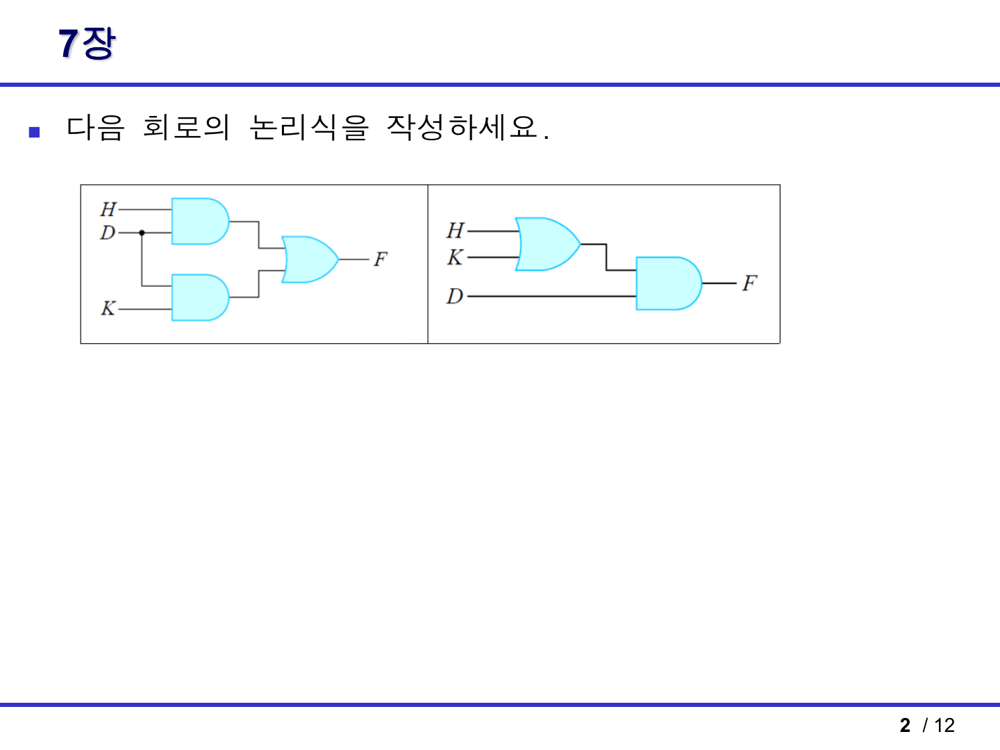
문제
두 회로의 논리식을 작성한다.
왼쪽 회로 풀이
입력은 H, D, K다. 왼쪽 회로는 AND 게이트 두 개와 OR 게이트 한 개로 되어 있다.
- 위 AND 게이트 입력은
H와D다.- 위 AND 출력:
HD
- 위 AND 출력:
- 아래 AND 게이트 입력은
D와K다.- 아래 AND 출력:
DK
- 아래 AND 출력:
- 두 AND 출력이 OR 게이트로 들어간다.
- 최종 출력:
F = HD + DK
- 최종 출력:
- 공통으로 들어 있는
D를 묶는다.F = D(H + K)
답:
F = HD + DK = D(H + K)
오른쪽 회로 풀이
오른쪽 회로는 먼저 H와 K를 OR로 더한 뒤, 그 결과를 D와 AND한다.
- OR 게이트 출력:
H + K - AND 게이트 출력:
D(H + K)
답:
F = D(H + K)
결론
두 회로는 겉모양은 다르지만 최종 논리식이 같다.
HD + DK = D(H + K)
즉 왼쪽 회로와 오른쪽 회로는 같은 기능을 한다.
시험 포인트
- 회로식 문제는 한 번에 최종식을 쓰려 하지 말고, 게이트별 중간 출력을 먼저 적는다.
- 공통 인수분해가 보이면 회로를 더 단순하게 바꿀 수 있다.
- 이 문제는 분배법칙
AB + AC = A(B + C)를 묻는 유형이다.
2. 힌트 PDF 3쪽: 6장 카르노맵 간소화
PDF 문제 원문
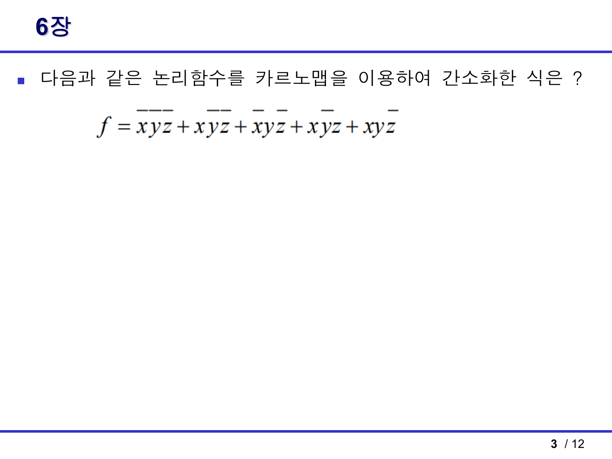
문제
다음 논리함수를 카르노맵으로 간소화한다.
f = x'y'z' + x'y'z + x'yz' + xy'z + xyz'
1단계: 각 항을 minterm 번호로 바꾸기
변수 순서는 x y z로 본다.
| 항 | x y z 값 | minterm |
|---|---|---|
x'y'z' |
000 | m0 |
x'y'z |
001 | m1 |
x'yz' |
010 | m2 |
xy'z |
101 | m5 |
xyz' |
110 | m6 |
따라서
f = Σm(0, 1, 2, 5, 6)
2단계: 3변수 K-map에 1 배치
열 순서는 yz = 00, 01, 11, 10이다.
| x \ yz | 00 | 01 | 11 | 10 |
|---|---|---|---|---|
| 0 | 1 | 1 | 0 | 1 |
| 1 | 0 | 1 | 0 | 1 |
3단계: 묶음 만들기
필수로 커버해야 하는 1은 m0, m1, m2, m5, m6이다.
묶음 A:
yz = 01열의 위아래 1을 묶는다.- 포함 minterm:
m1, m5 - 이 묶음에서
y=0,z=1은 고정이고x만 변한다. - 항:
y'z
묶음 B:
yz = 10열의 위아래 1을 묶는다.- 포함 minterm:
m2, m6 - 이 묶음에서
y=1,z=0은 고정이고x만 변한다. - 항:
yz'
묶음 C:
x=0행에서yz=00과yz=01을 묶는다.- 포함 minterm:
m0, m1 - 이 묶음에서
x=0,y=0은 고정이고z만 변한다. - 항:
x'y'
답
f = x'y' + y'z + yz'
동일하게 최소항을 묶는 방법에 따라 다음 식도 같은 최소형으로 볼 수 있다.
f = x'z' + y'z + yz'
두 식 모두 원래 1인 칸만 덮는다. 선택지형 시험이면 보기 중 같은 형태를 고르면 된다.
시험 포인트
- 보수 표시를 잘못 읽으면 minterm이 전부 틀어진다.
m5는101,m6은110이다. 3변수에서 minterm 번호는xyz를 2진수로 본다.- 답이 하나로만 나오지 않을 수 있다. 같은 크기의 묶음 선택지가 여러 개면 동치인 최소식이 생긴다.
3. 힌트 PDF 4쪽: 7장 가산기
PDF 출제 단서
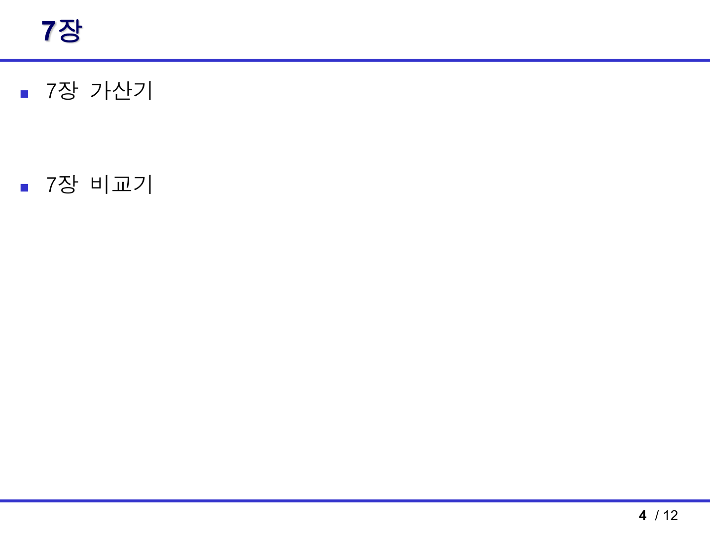
힌트 PDF 4쪽은 “7장 가산기”가 나온다는 범위 힌트다. 이 유형은 공식만 외우는 것보다 진리표에서 식이 왜 나오는지 알아두면 객관식이 바뀌어도 맞출 수 있다.
반가산기
반가산기는 입력 A, B 두 비트를 더해서 합 S와 자리올림 C를 만든다.
| A | B | S | C |
|---|---|---|---|
| 0 | 0 | 0 | 0 |
| 0 | 1 | 1 | 0 |
| 1 | 0 | 1 | 0 |
| 1 | 1 | 0 | 1 |
합 S는 두 입력이 서로 다를 때 1이다.
S = A xor B = A'B + AB'
자리올림 C는 두 입력이 모두 1일 때만 1이다.
C = AB
전가산기
전가산기는 입력 A, B, Cin 세 비트를 더한다.
합은 1의 개수가 홀수일 때 1이므로 XOR로 표현한다.
S = A xor B xor Cin
자리올림은 세 입력 중 적어도 두 개가 1일 때 1이다.
Cout = AB + ACin + BCin
다른 형태로는 다음처럼도 쓴다.
Cout = AB + (A xor B)Cin
4비트 병렬 가산기
4비트 병렬 가산기는 전가산기 4개를 연결한다.
- 최하위 비트에서 나온 carry가 다음 비트의
Cin으로 들어간다. - 이런 방식은 ripple carry 방식이다.
- 구조를 보면 FA가 여러 개 줄줄이 연결되어 있다.
가산기/감산기 판별
퀴즈 힌트 PDF 5쪽처럼 B 입력마다 XOR 게이트가 붙고 제어 입력 S가 같이 들어가면 4비트 병렬 가산기/감산기다.
S=0:B xor 0 = B,C0=0이므로A + BS=1:B xor 1 = B',C0=1이므로A + B' + 1 = A - B
답:
4비트 병렬 가산기/감산기
시험 포인트
FA가 여러 개 있으면 병렬 가산기 계열을 의심한다.B입력에 XOR가 붙어 있고 제어선이C0에도 들어가면 감산 기능까지 있는 회로다.- 2의 보수 감산은
A - B = A + B' + 1로 처리한다.
4. 힌트 PDF 4쪽: 7장 비교기
PDF 출제 단서
1비트 비교기
입력 A, B를 비교할 때 가능한 결과는 세 가지다.
| A | B | A>B | A=B | A<B |
|---|---|---|---|---|
| 0 | 0 | 0 | 1 | 0 |
| 0 | 1 | 0 | 0 | 1 |
| 1 | 0 | 1 | 0 | 0 |
| 1 | 1 | 0 | 1 | 0 |
각 출력식은 다음과 같다.
A > B = AB'
A = B = A'B' + AB = A xnor B
A < B = A'B
다중 비트 비교기
여러 비트 비교는 최상위 비트부터 본다.
예를 들어 2비트 수 A1A0, B1B0를 비교하면:
A > B = A1B1' + (A1 xnor B1)A0B0'
A = B = (A1 xnor B1)(A0 xnor B0)
A < B = A1'B1 + (A1 xnor B1)A0'B0
해석:
- 먼저 최상위 비트
A1과B1를 비교한다. - 최상위 비트에서 이미 크기가 결정되면 하위 비트는 볼 필요가 없다.
- 최상위 비트가 같을 때만 하위 비트를 비교한다.
시험 포인트
A=B는 XNOR다.- 다중 비트 비교기는 “높은 자리 우선”이 핵심이다.
- 객관식에서
AB',A'B,AB + A'B'가 보이면 1비트 비교기 공식과 연결한다.
5. 힌트 PDF 5쪽: NOR SR 래치 진리표
PDF 문제 원문
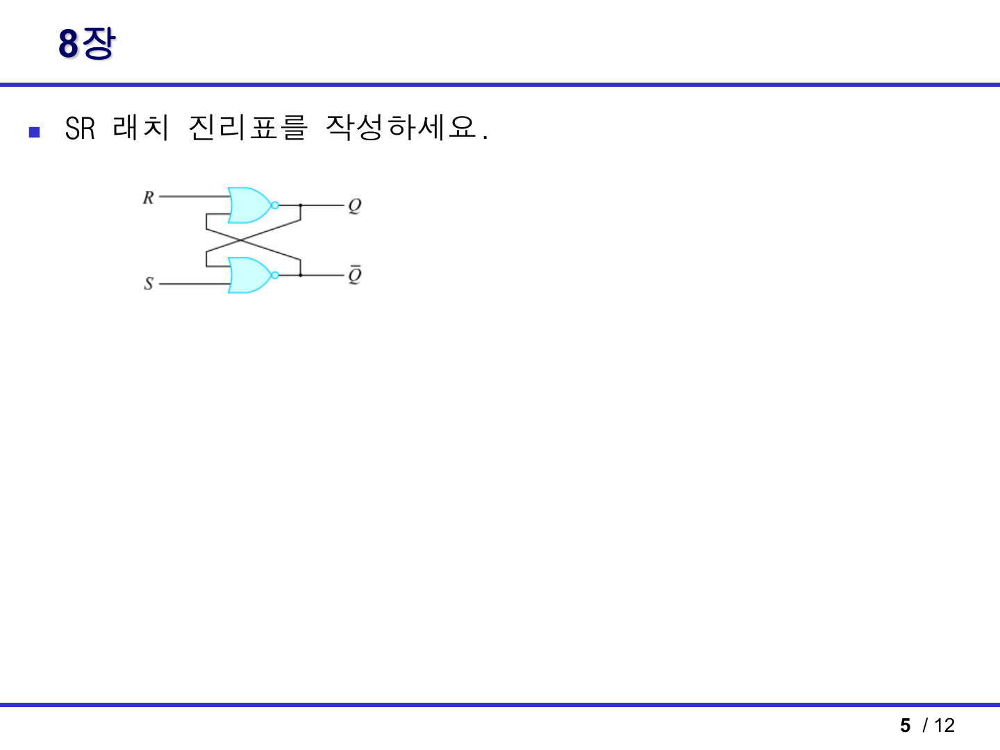
문제
NOR 게이트로 만든 SR 래치의 진리표를 작성한다.
그림에서는 위쪽 입력이 R, 아래쪽 입력이 S다. 하지만 표는 보통 S, R 순서로 쓴다. 이 순서를 헷갈리면 Set과 Reset이 뒤집힌다.
NOR SR 래치의 동작
NOR 게이트는 입력 중 하나라도 1이면 출력이 0이다.
NOR SR 래치에서는:
S=1, R=0: Set,Q=1S=0, R=1: Reset,Q=0S=0, R=0: 이전 상태 유지S=1, R=1: 금지 상태
진리표
| S | R | Q 다음 상태 Q(n+1) |
의미 |
|---|---|---|---|
| 0 | 0 | Q(n) |
유지 |
| 0 | 1 | 0 | Reset |
| 1 | 0 | 1 | Set |
| 1 | 1 | 부정/금지 | 두 NOR 출력이 모두 0이 되어 정상 보수 관계가 깨짐 |
왜 S=R=1이 금지인가
NOR 래치에서 S=1이면 아래쪽 NOR 출력인 Q'가 0이 된다. R=1이면 위쪽 NOR 출력인 Q도 0이 된다.
그러면 Q=0, Q'=0이 되어 원래 보수 관계인 Q' = Q의 반대가 깨진다. 그래서 S=R=1은 금지 또는 부정 상태라고 쓴다.
시험 포인트
- NOR형 SR 래치는 입력이 active-high다.
- Set은
S=1, Reset은R=1이다. - NAND형 SR 래치는 보통 active-low라 표가 반대로 나온다. 이 문제는 NOR형이다.
6. 힌트 PDF 6쪽: NOR SR 래치 파형
PDF 문제 원문
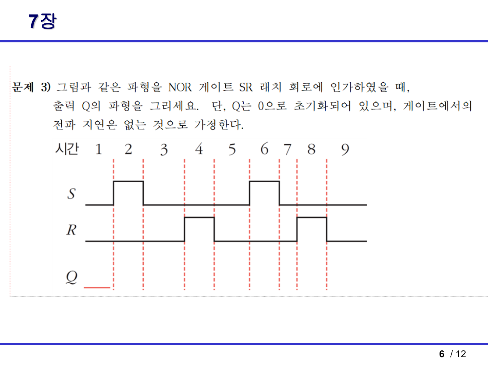
문제 조건
- NOR 게이트 SR 래치
- 초기
Q = 0 - 게이트 전파 지연 없음
- 입력 파형
S,R이 주어졌을 때 출력Q파형을 그린다.
풀이 원리
파형을 외우지 말고 구간마다 아래 규칙을 적용한다.
| S | R | Q |
|---|---|---|
| 0 | 0 | 이전 Q 유지 |
| 0 | 1 | 0 |
| 1 | 0 | 1 |
| 1 | 1 | 금지 |
구간별 해설
초기값이 Q=0이다.
첫 번째
S펄스가 올라가기 전S=0,R=0- 유지이므로
Q=0
첫 번째
S펄스 구간S=1,R=0- Set이므로
Q=1
첫 번째
S펄스가 내려간 뒤, 첫 번째R펄스 전S=0,R=0- 유지이므로
Q=1
첫 번째
R펄스 구간S=0,R=1- Reset이므로
Q=0
첫 번째
R펄스가 내려간 뒤, 두 번째S펄스 전S=0,R=0- 유지이므로
Q=0
두 번째
S펄스 구간S=1,R=0- Set이므로
Q=1
두 번째
S펄스가 내려간 뒤, 두 번째R펄스 전S=0,R=0- 유지이므로
Q=1
두 번째
R펄스 구간S=0,R=1- Reset이므로
Q=0
두 번째
R펄스 이후S=0,R=0- 유지이므로
Q=0
답안으로 그릴 Q 파형
글로 쓰면 다음과 같다.
Q는 처음 0이다.
첫 S 펄스에서 1로 올라간다.
첫 R 펄스에서 0으로 내려간다.
두 번째 S 펄스에서 다시 1로 올라간다.
두 번째 R 펄스에서 다시 0으로 내려간다.
그 사이 S=R=0인 구간은 직전 값을 유지한다.
시험 포인트
- 래치는 클록 에지가 아니라 입력 레벨에 반응한다.
S가 1인 구간에서 Set,R이 1인 구간에서 Reset이다.- 지연이 없다고 했으므로 입력이 바뀌는 순간 바로
Q가 바뀐다고 그린다.
7. 힌트 PDF 7쪽: NAND 회로 출력 간소화
PDF 문제 원문
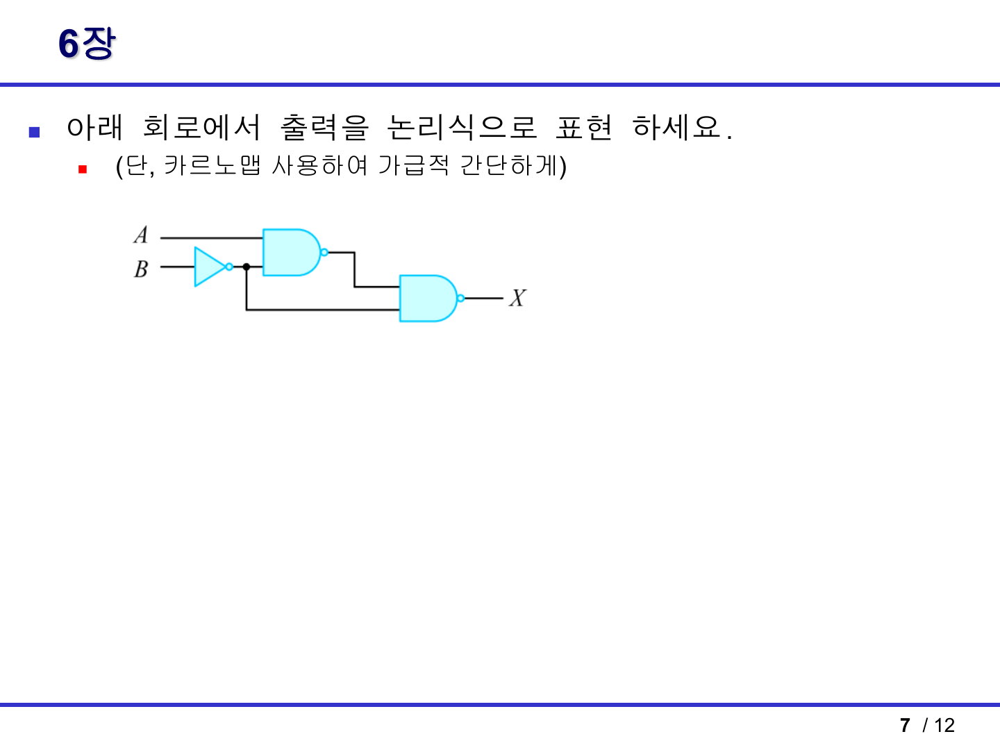
문제
아래 회로에서 출력 X를 논리식으로 표현하고, 카르노맵 또는 논리 법칙으로 간단히 한다.
1단계: 중간 신호 만들기
입력 B가 먼저 NOT 게이트를 통과한다.
B -> B'
첫 번째 NAND 게이트 입력은 A와 B'다.
N1 = (AB')'
마지막 NAND 게이트 입력은 N1과 B'다.
X = (N1 · B')'
따라서
X = ((AB')'B')'
2단계: 드모르간 적용
X = ((AB')'B')'
(PQ)' = P' + Q'를 적용한다.
X = ((AB')')' + (B')'
이중 보수를 제거한다.
X = AB' + B
흡수법칙을 적용한다.
AB' + B = A + B
답
X = A + B
진리표로 확인
| A | B | B' | N1=(AB')' | X=(N1B')' | A+B |
|---|---|---|---|---|---|
| 0 | 0 | 1 | 1 | 0 | 0 |
| 0 | 1 | 0 | 1 | 1 | 1 |
| 1 | 0 | 1 | 0 | 1 | 1 |
| 1 | 1 | 0 | 1 | 1 | 1 |
X열과 A+B열이 같으므로 최종식 A+B가 맞다.
시험 포인트
- NAND는 출력에 보수가 붙는다. 중간 출력을 괄호로 정확히 잡아야 한다.
B'가 두 군데로 갈라져 들어가므로 배선을 놓치면 안 된다.- 마지막에
AB' + B = A + B로 줄이는 흡수법칙을 기억한다.
8. 퀴즈 힌트 2쪽: 2변수 진리표 간소화 1
PDF 문제 원문
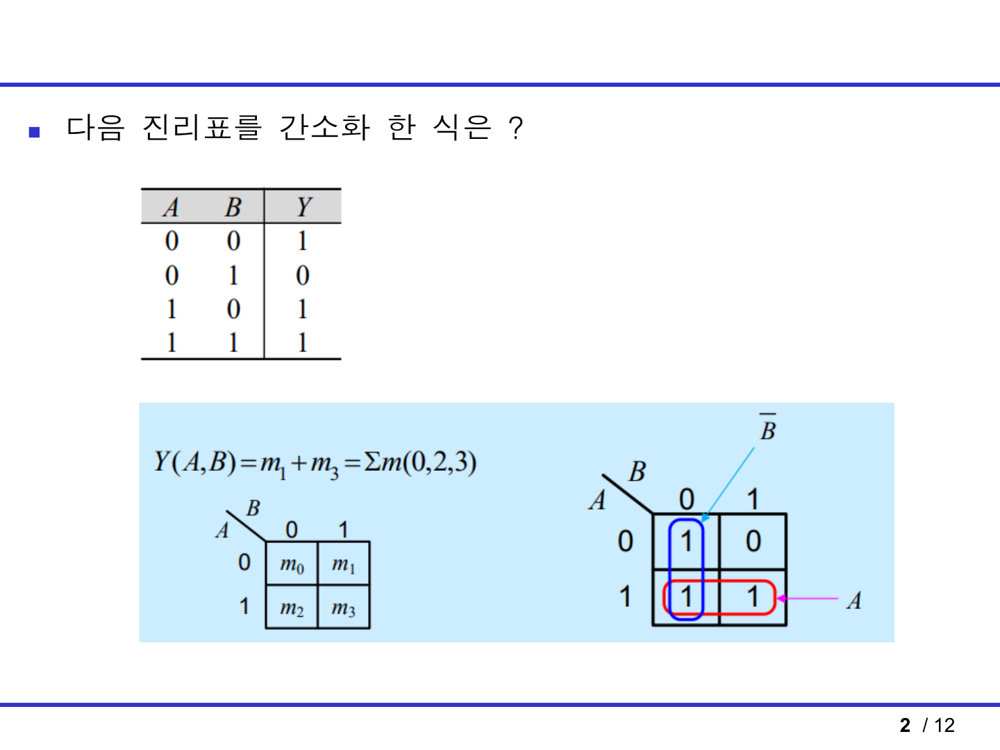
문제 진리표
| A | B | Y |
|---|---|---|
| 0 | 0 | 1 |
| 0 | 1 | 0 |
| 1 | 0 | 1 |
| 1 | 1 | 1 |
1단계: 1이 되는 행 찾기
Y=1인 행은 다음과 같다.
| A | B | minterm |
|---|---|---|
| 0 | 0 | m0 |
| 1 | 0 | m2 |
| 1 | 1 | m3 |
따라서
Y = Σm(0, 2, 3)
2단계: K-map 묶기
2변수 K-map은 다음처럼 본다.
| A \ B | 0 | 1 |
|---|---|---|
| 0 | 1 | 0 |
| 1 | 1 | 1 |
묶음 1:
A=1인 아래 행 두 칸을 묶는다.B는 0에서 1로 변하므로 사라진다.- 항:
A
묶음 2:
B=0인 왼쪽 열 두 칸을 묶는다.A는 0에서 1로 변하므로 사라진다.- 항:
B'
답
Y = A + B'
시험 포인트
A=1인 행 전체가 1이면 항은A다.B=0인 열 전체가 1이면 항은B'다.
9. 퀴즈 힌트 3쪽: 3변수 진리표 간소화
PDF 문제 원문
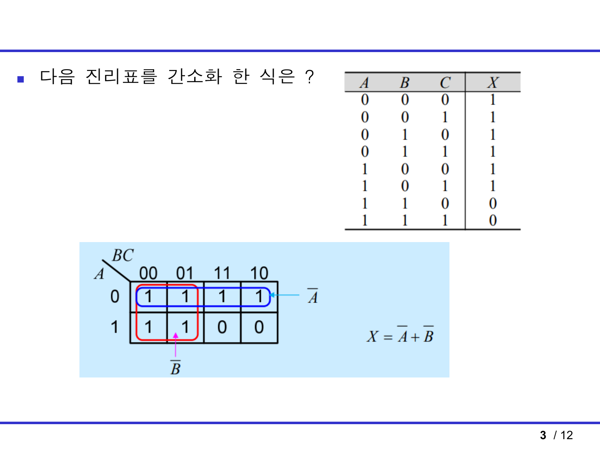
문제 진리표 요약
X=1인 행은 A=0인 모든 행과, A=1이면서 B=0인 행이다. 반대로 A=1, B=1인 행에서는 X=0이다.
K-map
열 순서는 BC = 00, 01, 11, 10이다.
| A \ BC | 00 | 01 | 11 | 10 |
|---|---|---|---|---|
| 0 | 1 | 1 | 1 | 1 |
| 1 | 1 | 1 | 0 | 0 |
묶음 풀이
묶음 1:
A=0인 윗행 네 칸을 묶는다.B,C는 변하고A=0만 고정이다.- 항:
A'
묶음 2:
B=0인 두 열BC=00,BC=01을 위아래 포함해 네 칸으로 묶는다.A,C는 변하고B=0만 고정이다.- 항:
B'
답
X = A' + B'
시험 포인트
- 4칸 묶음은 변수가 2개 사라지고 1개만 남는다.
- 3변수 K-map에서도 열 순서가
00, 01, 11, 10이다.
10. 퀴즈 힌트 4쪽: 무관항 포함 4변수 K-map
PDF 문제 원문
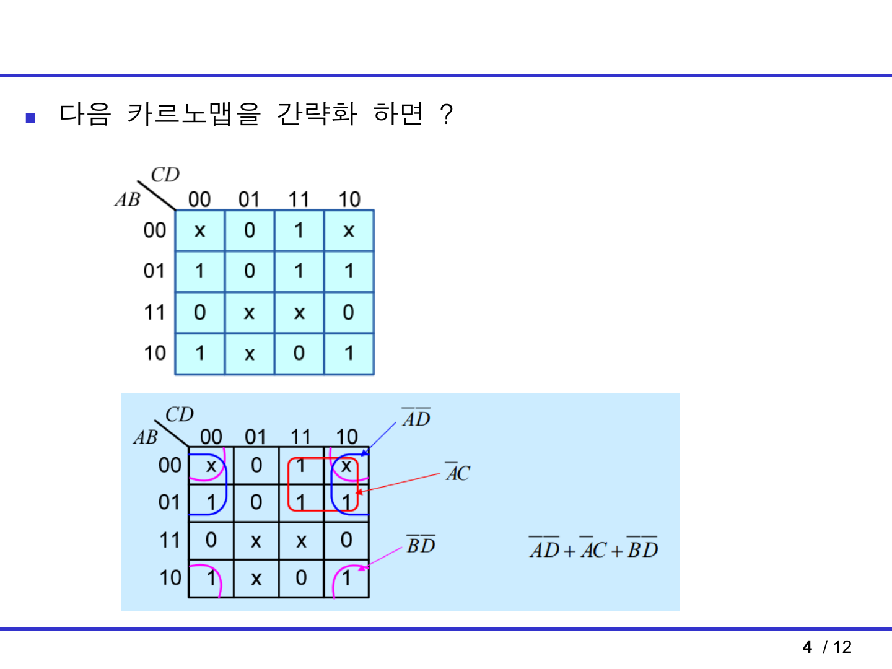
문제
4변수 K-map이 주어지고, 1, 0, x가 섞여 있다.
행은 AB = 00, 01, 11, 10, 열은 CD = 00, 01, 11, 10이다.
핵심
x는 무관항이다. 더 큰 묶음을 만들 수 있으면 1처럼 사용하고, 필요 없으면 버린다.
묶음 1: A'D'
사용하는 칸:
AB=00,AB=01CD=00,CD=10- 좌우 끝 열은 서로 인접하므로 wrap-around 묶음이 가능하다.
이 묶음에서:
A=0은 고정D=0은 고정B,C는 변함
따라서 항은:
A'D'
묶음 2: A'C
사용하는 칸:
AB=00,AB=01CD=11,CD=10
이 묶음에서:
A=0은 고정C=1은 고정B,D는 변함
따라서 항은:
A'C
묶음 3: B'D'
사용하는 칸:
AB=00,AB=10CD=00,CD=10- 위아래 끝 행과 좌우 끝 열을 함께 이어서 모서리 네 칸을 묶는 형태다.
이 묶음에서:
B=0은 고정D=0은 고정A,C는 변함
따라서 항은:
B'D'
답
F = A'D' + A'C + B'D'
시험 포인트
- 무관항
x를 쓰는 이유는 2칸 묶음을 4칸 묶음으로 키우기 위해서다. - 모서리 네 칸도 서로 인접할 수 있다.
- 4변수에서 4칸 묶음을 만들면 변수 2개가 남는다.
11. 퀴즈 힌트 5쪽: 조합회로 명칭
PDF 문제 원문
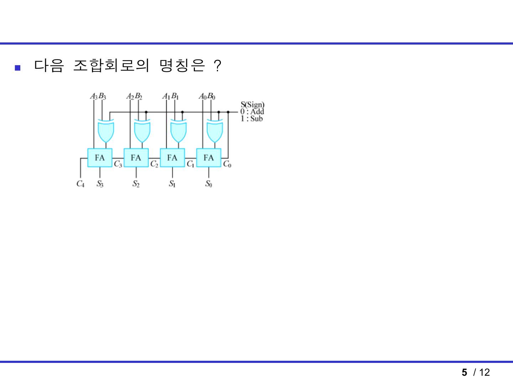
문제
FA 4개와 XOR 게이트 4개가 있는 조합회로의 명칭을 묻는다.
회로 해석
회로에는 A3~A0, B3~B0 입력이 있고, 각 자리마다 전가산기 FA가 있다.
또한 각 B 입력은 XOR 게이트를 거친다. XOR의 다른 입력은 제어선 S다.
B_i xor S
제어선 설명은 다음과 같다.
S = 0: Add
S = 1: Sub
S=0일 때
B_i xor 0 = B_i
C0 = 0
따라서 회로는 그냥 덧셈을 한다.
A + B
S=1일 때
B_i xor 1 = B_i'
C0 = 1
따라서 회로는 다음을 계산한다.
A + B' + 1
B' + 1은 B의 2의 보수이므로:
A + B' + 1 = A - B
답
4비트 병렬 가산기/감산기
또는
4-bit parallel adder/subtractor
시험 포인트
FA가 4개면 4비트 병렬 가산기 구조다.B쪽에 XOR가 있고 제어선S가 들어가면 감산 기능까지 있다.S=1에서B를 반전하고C0=1을 더하는 것이 2의 보수 감산이다.
12. 퀴즈 힌트 6쪽: NOR 게이트 SR 플립플롭 진리표
PDF 문제 원문
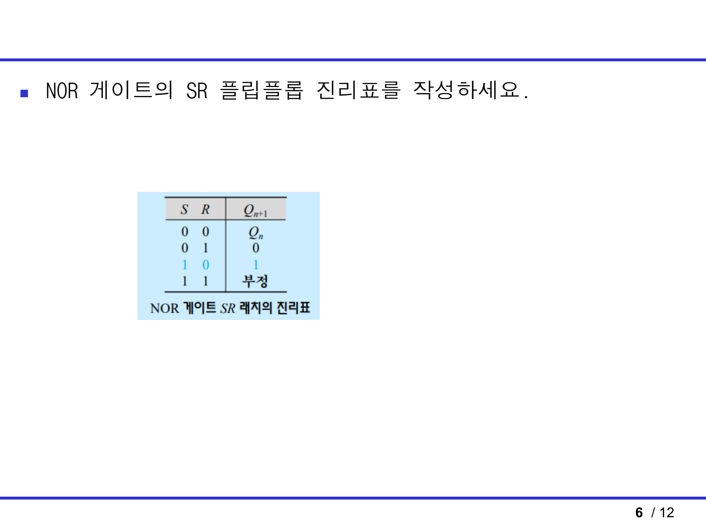
자료에는 “SR 플립플롭”이라고 되어 있지만, 그림과 표의 동작은 NOR형 SR 래치/플립플롭 기본 진리표와 같다. 시험에서는 아래 표를 쓰면 된다.
| S | R | Q(n+1) | 의미 |
|---|---|---|---|
| 0 | 0 | Q(n) |
유지 |
| 0 | 1 | 0 | Reset |
| 1 | 0 | 1 | Set |
| 1 | 1 | 부정/금지 | 사용 금지 |
풀이 설명
S=0, R=0: 두 입력이 모두 비활성이라 현재 상태를 유지한다.S=0, R=1: Reset 입력이 활성화되어 다음Q가 0이다.S=1, R=0: Set 입력이 활성화되어 다음Q가 1이다.S=1, R=1: Set과 Reset을 동시에 요구하므로 정상적인 저장 상태가 아니다.
시험 포인트
- NOR형은
S와R이 1일 때 동작하는 active-high 입력이다. - NAND형은 보통 active-low라 표가 반대로 나온다.
S=R=1은 “1”이나 “유지”가 아니라 금지/부정이다.
13. 8장 플립플롭 기본표
힌트에는 SR 래치가 직접 나왔지만, 시험 범위상 D/JK/T 플립플롭 표도 같이 고정해야 한다.
D 플립플롭
Q(n+1) = D
| D | Q(n+1) |
|---|---|
| 0 | 0 |
| 1 | 1 |
해석: 클록 에지에서 입력 D가 그대로 저장된다.
JK 플립플롭
| J | K | Q(n+1) | 의미 |
|---|---|---|---|
| 0 | 0 | Q(n) |
유지 |
| 0 | 1 | 0 | Reset |
| 1 | 0 | 1 | Set |
| 1 | 1 | Q(n)' |
Toggle |
특성식:
Q(n+1) = JQ' + K'Q
해석: JK는 SR의 금지 상태를 toggle로 바꾼 플립플롭이다.
T 플립플롭
| T | Q(n+1) | 의미 |
|---|---|---|
| 0 | Q(n) |
유지 |
| 1 | Q(n)' |
Toggle |
특성식:
Q(n+1) = T xor Q
해석: T가 1인 클록 에지마다 출력이 반전된다.
14. 마지막 10분 체크
- 회로식은 게이트마다 중간 출력부터 적는다.
- 보수 표시를 minterm으로 바꾼 뒤 K-map에 넣는다.
- K-map 열/행 순서는
00, 01, 11, 10이다. - 묶음은 1, 2, 4, 8개만 가능하고 가장자리끼리 이어진다.
- 무관항
x는 큰 묶음을 만들 때만 쓴다. - 반가산기:
S = A xor B,C = AB - 전가산기:
S = A xor B xor Cin,Cout = AB + ACin + BCin - 1비트 비교기:
A>B = AB',A=B = A'B' + AB,A<B = A'B - 4비트 가산기/감산기는
B xor S와C0=S를 찾는다. - NOR SR 래치:
00 유지,01 Reset,10 Set,11 금지 - 래치 파형은
S펄스에서 올라가고R펄스에서 내려간다. - NAND 회로는 중간 출력의 보수를 괄호로 끝까지 유지한다.